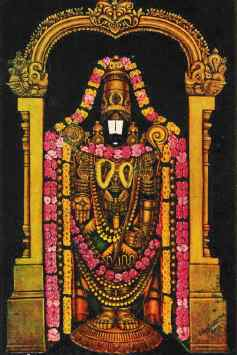

Thirupathi
Tirupati City is located in the southeastern part of Andhrapradesh state. Tirupati is famous for a temple dedicated to Lord Venkateshvara. Tirupati is known as the abode of the Hindu god Venkateshvara,"Lord of Seven Hills".

It was developed mainly by the contributions made by kings during their rule. Almost all the kings from great dynasties of the southern peninsula have paid homage to Lord Sri Venkateswara in this ancient shrine. The Pallavas of Kancheepuram (9th century AD), the Cholas of Thanjavur (a century later), the Pandyas of Madurai, and the kings and chieftains of Vijayanagar (14th - 15th century AD) were devotees of the Lord and they competed with one another in endowing the temple with rich offerings and contributions.
During the rule of the Vijayanagar dynasty contributions made to the temple increased enormously. Krishnadevaraya had statues of himself and his consorts installed at the portals of the temple, and these statues can be seen to this day. There is also a statue of Venkatapati Raya in the main temple.
Sri Govindharajaswami temple
One of the famous temples of Tirupati , Sri Govindarajaswami Temple is situated in the heart of the town. It was consecrated by Saint Ramanujacharya in 1130 AD.
|